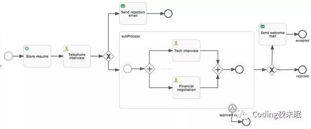

如何在Java项目中使用Activiti做业务流程管理
什么是Activiti？
Activiti项目是一项新的基于Apache许可的开源BPM平台，从基础开始构建，旨在提供支持新的BPMN 2.0标准，包括支持对象管理组（OMG），面对新技术的机遇，诸如互操作性和云架构，提供技术实现。

工作流示例
什么是BPMN 2.0？
由BPMI(The Business Process Management Initiative)开发了一套标准叫业务流程建模符号(BPMN - Business Process Modeling Notation)。在 BPMI Notation Working Group超过2年的努力，于2004年5月对外发布了BPMN 1.0 规范。后BPMI并入到OMG组织，OMG于2011年推出BPMN2.0标准，对BPMN进行了重新定义(Business Process Model and Notation)。BPMN的主要目标是提供一些被所有业务用户容易理解的符号，从创建流程轮廓的业务分析到这些流程的实现，直到最终用户的管理监控。BPMN也支持提供一个内部的模型可以生成可执行的BPEL4WS。因此BPMN的出现，弥补了从业务流程设计到流程开发的间隙。
BPMN定义了一个业务流程图（Business Process Diagram），该业务流程图基于一个流程图（flowcharting），该流程图被设计用于创建业务流程操作的图形化模型。而一个业务流程模型（Business Process Model），指一个由图形对象（graphical objects）组成的网状图，图形对象包括活动（activities)和用于定义这些活动执行顺序的流程控制器（flow controls）。

BPMN2.0规范内容
常用的BPMN符号
启动与结束事件(event)
启动事件与结束事件是很重要的一部分，分别负责流程的开始与结束。

启动事件

结束事件
1.启动事件
启动事件又分为：空启动事件；定时启动事件；异常启动事件。
1）空启动事件
<startEvent id="startevent" name="Start"></startEvent>
以上XML表示一个空启动事件，由于startEvent标签内没有任何元素定义，因此表示一个空启动事件。
Activiti扩展了formKey属性avtiviti:formKey，可以用来指定启动事件关联的表单文件。
activiti扩展了initiator事件activiti:initiator，可以用来记录启动流程人的ID，启动流程之后此属性指定的变量就会自动设置当前人的名称。
2）定时启动事件
定时启动事件可以用于一次性定时启动，也可以用于特定时间定时启动。

定时启动事件
<startEvent id="timerstartevent1" name="Timer start">
<timerEventDefinition></timerEventDefinition>
</startEvent>
以上XML就表示一个空定时启动事件。
3）异常启动事件
异常启动事件可以出发一个异常子流程，但不能通过API方式启动，总是在另外一个子流程抛出异常结束事件的时候被触发。异常启动事件"捕获型"，而异常结束事件是抛出型的。

异常启动事件
<endEvent id="errorendevent1" name="ErrorEnd">
<errorEventDefinition></errorEventDefinition>
</endEvent>
以上XML就表示一个空定时启动事件。
4）消息启动事件
消息启动事件可以通过一个消息名称触发，从而启动一个流程实例，还可以结合消息抛出事件一起使用。

消息启动事件
<startEvent id="messagestartevent1" name="Message start">
<messageEventDefinition></messageEventDefinition>
</startEvent>
2.结束事件
结束事件又分为：空结束事件；异常结束事件；取消结束事件。
1）空结束事件
结束事件是抛出型的。空结束事件不处理抛出结果，空结束事件一般用于正常结束流程。

空结束事件
<bpmndi:BPMNShape bpmnElement="endevent2" id="BPMNShape_endevent2">
<omgdc:Bounds height="35.0" width="35.0" x="1030.0" y="280.0"></omgdc:Bounds>
</bpmndi:BPMNShape>
2）异常结束事件
异常结束事件时有抛出结果的，它定义了需要抛出的错误代码，如果找到了异常开始事件定义的异常代码，则会触发异常开始事件，否则按照空结束事件处理。

异常结束事件
<bpmndi:BPMNShape bpmnElement="errorendevent1" id="BPMNShape_errorendevent1">
<omgdc:Bounds height="35.0" width="35.0" x="1030.0" y="370.0"></omgdc:Bounds>
</bpmndi:BPMNShape>
3）终止结束事件
它可以终止一个流程实例的执行。

终止结束事件
<bpmndi:BPMNShape bpmnElement="terminateendevent1" id="BPMNShape_terminateendevent1">
<omgdc:Bounds height="35.0" width="35.0" x="980.0" y="260.0"></omgdc:Bounds>
</bpmndi:BPMNShape>
4）取消结束事件
取消结束事件可以取消一个事务子流程的执行，同时也能在子流程中使用，当子流程在执行过程中出现异常时，可以设置一个取消结束事件。

取消结束事件
<bpmndi:BPMNShape bpmnElement="cancelendevent1" id="BPMNShape_cancelendevent1">
<omgdc:Bounds height="35.0" width="35.0" x="860.0" y="330.0"></omgdc:Bounds>
</bpmndi:BPMNShape>
容器(Container)

容器
任务(Task)
任务时流程中重要的组成部分,可分为：用户任务；脚本任务；WebServices任务；业务规则任务；邮件任务；Mule任务；Camle任务；手动任务；JavaService任务；Shell任务。
1）用户任务

用户任务
<process id="myProcess" name="My process" isExecutable="true">
<userTask id="usertask1" name="User Task"></userTask>
</process>
以上XML定义了一个用户任务。
2）脚本任务
脚本任务可以运行引擎依赖的语言之外的脚本语言。

脚本任务
<process id="myProcess" name="My process" isExecutable="true">
<scriptTask id="scripttask1" name="Script Task" activiti:autoStoreVariables="false"></scriptTask>
</process>
3）Service 任务
Service 任务允许指定一个实现了指定接口的类，或者执行一个表达式，可以把一个结果保存到一个变量中。

JavaServices任务
<process id="myProcess" name="My process" isExecutable="true">
<serviceTask id="servicetask1" name="Service Task"></serviceTask>
</process>
4）业务规则任务
业务规则任务可以根据流程变量的值预设的业务规则，就是把业务数据交由规则引擎处理，规则引擎根据不同的业务规则得到最终的结果在返回给调用者。

业务规则任务
<process id="myProcess" name="My process" isExecutable="true">
<businessRuleTask id="businessruletask1" name="Business rule task"></businessRuleTask>
</process>
5）邮件任务
邮件任务可以通过Activiti发送邮件，其中邮件的信息通过变量的方式传递。

邮件任务
<process id="myProcess" name="My process" isExecutable="true">
<serviceTask id="mailtask1" name="Mail Task" activiti:type="mail"></serviceTask>
</process>
网关(Gateway)
网关用于控制流程的走向，可分为：排他网关；并行网关；包容网关；事件网关。
1）排他网关
排他网关用来对流程中的决定进行建模，流程执行到该网关时，按照输出流的顺序逐个计算，当条件计算结果为true时，继续执行，如果多个线路的计算结果都为true时，那么只会执行第一个值为true的网关。

排他 网关
<process id="myProcess" name="My process" isExecutable="true">
<exclusiveGateway id="exclusivegateway1" name="Exclusive Gateway"></exclusiveGateway>
</process>
2）并行网关
并行网关用来对并发的任务进行流程建模，并行网关的任务取决于输入，输出顺序流。
拆分：并行执行所有的输出输入顺序流，并且为每一条顺序流创建一个并行执行线路。
合并：所有从并行网关拆分并执行完成的线路均在此等候，直到所有的线路都执行完成才继续向下执行。

并行网关
<process id="myProcess" name="My process" isExecutable="true">
<parallelGateway id="parallelgateway1" name="Parallel Gateway"></parallelGateway>
</process>
3）包容网关
包容网关融合了排他网关和并行网关的特性，包容网关既可以同事执行多条线路。有允许在网关上设置条件，也分为拆分与合并。

包容网关
<process id="myProcess" name="My process" isExecutable="true">
<inclusiveGateway id="inclusivegateway1" name="Inclusive Gateway"></inclusiveGateway>
</process>
4）事件网关
事件网关是专门为中间捕获事件设置的，它允许多个输出流指向多个不同的中间捕获事件。当流程执行到事件网关后流程处于等待的状态，因为中间等待事件需要依赖中间抛出事件触发。

事件网关
<process id="myProcess" name="My process" isExecutable="true">
<eventBasedGateway id="eventgateway1" name="Event Gateway"></eventBasedGateway>
</process>
子流程(Subprocess)
把一切需要处理的任务归结到一起作为作为一个大流程的一部分，因为子流程嵌入在主流程中，所有也叫"嵌入式子流程"。
子流程限制：
只能包含一个空启动事件；
至少有一个结束事件；
在子流程中不能把输出流设置到子流程之外的活动上。
1）调用活动
调用活动解决的问题是流程的通用性，和子流程一样只不过表现的方式不同而已。

调用活动
<process id="myProcess" name="My process" isExecutable="true">
<callActivity id="callactivity1" name="Call activity"></callActivity>
</process>
边界事件(Boundary Event)

边界事件
中间事件(Intermediate Event)

中间事件
监听器(Listener)
在Activiti 中开发人员可以通过配置监听器的方式监听各种动作，例如流程 的启动，结束，创建，任务的完成
监听器分为两类：执行监听器和任务监听器。
执行监听器可以捕获的事件如下：
流程实例的启动，结束
输出流的捕获
活动的启动，结束
路由开始，结束
中间事件开始，结束
触发开始事件，触发结束事件
import org.activiti.engine.delegate.DelegateExecution;
import org.activiti.engine.delegate.ExecutionListener;
public class ExecutionListenerForFlow implements ExecutionListener{
@Override
public void notify(DelegateExecution delegate) throws Exception {
}
任务监听器相对于执行监听器的使用范围要小的多，因为它只适用于用户任务，用来监听三种事件：
create:在任务被创建且所有的任务属性设置完成后才触发
assignment：在任务被分配给某个办理人之后触发
complete：在配置了监听器的上一个任务完成时触发
import org.activiti.engine.delegate.DelegateTask;
import org.activiti.engine.delegate.TaskListener;
public class ExecutionListenerForFlow implements TaskListener{
@Override
public void notify(DelegateTask arg0) {
// TODO Auto-generated method stub
}
}
Activiti之HelloWorld
从官网上下载activiti，这里使用的版本是6.0，并安装Eclipse BPMN设计插件。
一切就绪后，解压wars/activiti-rest.war，从WEB-INF文件夹中拷贝lib文件夹中的依赖库和classes文件夹中的activiti-custom-context.xml文件。
使用Eclipse建立工程，并绘制bpmn图备用。

BPMN设计器及DEMO
新建HelloWorld类。
1）使用配置文件创建数据库
String resource="activiti-custom-context.xml";
String beanName="processEngineConfiguration";
ProcessEngineConfiguration configuration= ProcessEngineConfiguration.createProcessEngineConfigurationFromResource(resource,beanName);
//创建一个流程引擎对象，在创建流程引擎对象时会自动建表
ProcessEngine engine= configuration.buildProcessEngine();
配置文件使用之前拷贝的activiti-custom-context.xml文件，修改内容如下：

数据库配置文件
之后，运行程序，成功生成28张表。

数据库表
Activiti所有的表都以ACT_开头。第二部分是表示用途的两个字母标识。用途也和服务的API对应。
ACT_RE_*：’RE’表示repository。这个前缀的表包含了流程定义和流程静态资源 （图片，规则等等）。
ACT_RU_*：’RU’表示runtime。这些是运行时的表，包含流程实例，任务，变量，异步任务等运行中的数据。Activiti只在流程实例执行过程中保存这些数据， 在流程结束时就会删除这些记录。这样运行时表可以一直很小且速度很快。
ACT_ID_*：’ID’表示identity。这些表包含身份信息，比如用户，组等等。
ACT_HI_*：’HI’表示history。这些表包含历史数据，比如历史流程实例，变量，任务等等。
ACT_GE_*：通用数据，用于不同场景下。
资源库流程规则表
act_re_deployment：部署信息表
act_re_model：流程设计模型部署表
act_re_procdef：流程定义数据表
运行时数据库表
act_ru_execution：运行时流程执行实例表
act_ru_identitylink：运行时流程人员表，主要存储任务节点与参与者的相关信息
act_ru_task：运行时任务节点表
act_ru_variable：运行时流程变量数据表
历史数据库表
act_hi_actinst：历史节点表
act_hi_attachment：历史附件表
act_hi_comment：历史意见表
act_hi_identitylink：历史流程人员表
act_hi_detail ：历史详情表，提供历史变量的查询
act_hi_procinst：历史流程实例表
act_hi_taskinst：历史任务实例表
act_hi_varinst：历史变量表
组织机构表
act_id_group ：用户组信息表
act_id_info：用户扩展信息表
act_id_membership：用户与用户组对应信息表
act_id_user：用户信息表
这四张表很常见，基本的组织机构管理，关于用户认证方面建议还是自己开发一套，组件自带的功能太简单，使用中有很多需求难以满足。
通用数据表
act_ge_bytearray：二进制数据表
act_ge_property：属性数据表存储整个流程引擎级别的数据，初始化表结构时会默认插入三条记录
2）加载bpmn文件
// 获得一个部署构建器对象，用于加载流程定义文件（test1.bpmn,test.png）完成流程定义的部署
ProcessEngine processEngine = ProcessEngines.getDefaultProcessEngine();
DeploymentBuilder builder= processEngine.getRepositoryService().createDeployment();
// 加载流程定义文件
builder.addClasspathResource("MyProcess.bpmn");
builder.addClasspathResource("MyProcess.png");
// 部署流程定义
Deployment deployment = builder.deploy();
System.out.println(deployment.getId());
到此，Activiti之HelloWorld便已完成了。大家可以试着查阅资料编写其他案例。
activiti中的几个对象
几个和流程相关的对象
Deployment：部署对象，和部署表(act_re_deployment)对应
ProcessDefinition：流程定义对象，和流程定义表(act_re_procdef)对应
ProcessInstance：流程实例对象，和流程实例表(act_ru_execution)对应
Task：任务对象，和任务表(act_ru_task)对应
几个Service对象
RepositoryService：操作部署、流程定义等静态资源信息
RuntimeService：操作流程实例，启动流程实例、查询流程实例、删除流程实例等动态信息
TaskService：操作任务，查询任务、办理任务等和任务相关的信息
HistoryService：操作历史信息的，查询历史信息
IdentityService：操作用户和组
几个Query对象
DeploymentQuery：对应查询部署表(act_re_deployment)
ProcessDefinitionQuery：对应查询流程定义表(act_re_procdef)
ProcessInstanceQuery：对应查询流程实例表(act_ru_execution)
TaskQuery：对应查询任务表(act_ru_task)